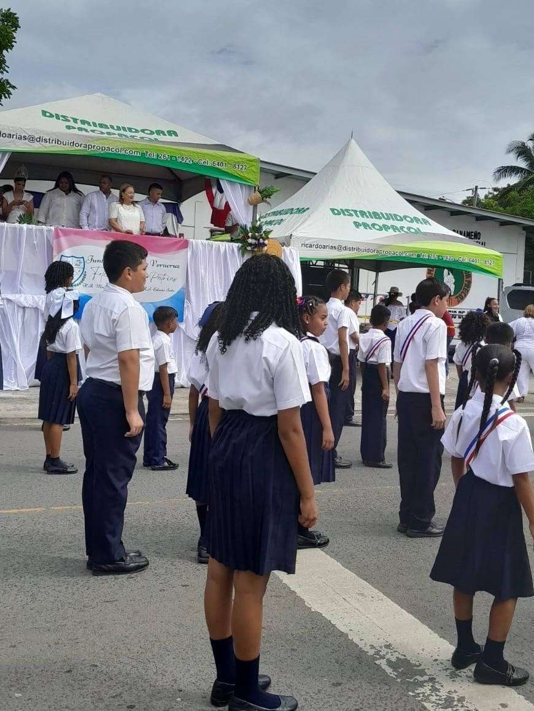

Recorrido por la playa Venao de Veracruz
Personas disfrutando de la playa.
Por la Playa de Chumical
Vista de Veracruz desde el mirador de Cerro Cabra
Una parte de la ciudad de Panamá vista desde el mirador de Cerro Cabra
Datos sobre el mirador de Cerro Cabra
Celebracion del 10 de Noviembre

Niños desfilando en Veracruz el 3 de Noviembre
Desfile del 3 de Noviembre
Restaurante Tacos Mexicanos
Parroquia Inmaculada Concepcion
Mini super Todo
Calle principal de Veracurz
El centro médico Costa del Sol
El Instituto Panameño de Habilitación especial
La tienda más antigua de Veracruz
El Mr Precio de Veracruz
Parque principal de Veracruz
Ferretería casa 99
Junta Comunal de Veracruz
Campo de Béisbol de Veracruz
Algunas de las Vistas de veracruz
Un poco de Naturaleza
La tranquilidad de la naturaleza se refleja en esta imagen